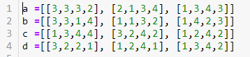
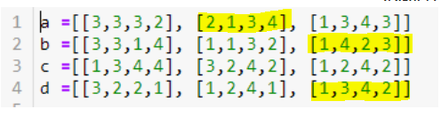

מחפש עזרה עם קוד שלא ירוץ על כמות מטורפת של לולאות השוואה.
יש לי מספר משתנים שכל אחד מהם מכיל רשימה של רשימות, כל תת רשימה בעלת 4 תווים/ מספרים. אני רוצה לשלוף תת רשימה אחת בלבד מכל משתנה בתנאי שכל תתי האיברים שאשלוף יהיו שונים לחלוטין כלומר האיבר ה i בכל תתי הרשימות הוא יחודי.
לדוגמא:

התמונה היא רק דוגמא חלקית והרשימות הרבה יותר ארוכות אך כל תת רשימה מכילה אך ורק 4 איברים.
aviadamar
תעשה פונקציה שמחזירה אמת או שקר אם כל האיברים של רשימה הם שונים.
ואז תעשה פשוט לולאה שעוברת על רשימות של כל משתנה וברגע שחוזרת לך תשובה חיובית מהפונקציה תשלוף את אותה הרשימה.
האיברים תמיד מ1 עד 4? או יכולים להיות כל דבר ?
ofirp
נראה לי שכתבתי בצורה לא ברורה.
אני רוצה למשל לשלוף את [1]a ואת [2]b ואת [0]c ואת [12]d אם ורק אם בכל נקודה הם מכילים ספרה שונה. כלומר אם הספרה הראשונה בשניים מתוך ה4 ששלפתי היא זהה אז זה לא תקין.
מדובר על כמות גדולה של השוואות - כרגע יש אצלי 12 איברים של 4 ספרות בכל אחד מ 4 המשתנים ואני מחפש את כל הקומבינציות שעונות להגדרה הזאת
aviadamar
אתה רוצה בעצם לשלוף רצף של רשימות, אחת מתוך כל קומבינציה כך שהם כולן שונות אחת מהשניה ?
תרשום נגיד מה הפלט שאתה מצפה מהדוגמא שהעלאת פה.
ofirp
אני רוצה לשלוף את כל הקומבינציות האפשריות של איבר ייחודי.
לדוגמא:
[1, 3, 4, 2], [3, 4, 2, 1] - אלו הם שני איברים יחודיים כי אף איבר i שלהם לא דומה.
אני רוצה למצוא בכל פעם 4 איברים יחודיים מתוך משתנים שמכילים 12 איברים שונים ומדובר בהמון צירופים.
aviadamar
הפלט עבוד הדוגמא שלך הוא בעצם הרשימות האלה ?

orpazf
אפשר לתהות האם זה משהו שקשור לקורס של ים או מחקר פרטי? כי יש כל מיני דברים שלא נלמדו שכנראה יכולים לסייע, והשאלה היא גם מה המטרה - יעילות? קוד נקי וקריא?
מה ההנחות שלך? האם מדובר בקבוצה קטנה וידועה מראש של תווים? אם כן - האם היא באורך 4 או אחר?
לייק 1
ofirp
זה משהו אישי שאני מנסה לפצח ולא מחפש יעילות ולא משנה לי כל שימוש בדברים שלא למדנו.
רשימה מוגדרת כרגע של 4 משתנים שכל אחד מכיל 12 איברים עם 4 ספרות בתוך כל איבר, יש לדעתי 12 בחזרת 4 צירופים אפשריים ומתוכם אני מחפש להשוות ברמת תת איבר כך שלולאות פשוטות לא עובדות לי
orpazf
כמה דרכים לא מסובכות שעולות לי לראש:
לולאה מקוננת.
לבדוק האם עותק מסודר של תת הרשימה זהה לרשימה מסודרת של ארבעת האיברים.
להשתמש בסטים כדי לבדוק האם 4 האיברים בתת הרשימה שונים.
בטוחה שיש עוד הרבה דרכים וסיכוי לא רע שחלקן יהיו יותר יפות/קריאות, אבל זה מה שקופץ לי כרגע
לייק 1
ofirp
סטים לא מסתכלים על סדר האיברים וזה דווקא מה שאני בא להשוות. בלי set זה דורש ממני לולאה נוסף על כל השוואה של שני איברים
aviadamar
זה בדיוק מה שחשבתי פשוט לעשות בדיקה עבור רשימה לשלוף אכל פעם אחת ולוודא שהיא לא נמצאת כבר.
פונקציה שבודקת אם איברי הרשימה לא זהים.
כל פעם תאסוף אחת כזו ושאתה “צובר” אותה תבדוק שלא צברת אותה כבר.
orpazf
אז אני חוששת שלא הבנתי מה המטרה. אתה רוצה לאסוף תתי רשימות שבכל אחת יש את כל אחד מארבעת האיברים ואף תת רשימה אינה זהה לכזו שכבר יש לך?
אני רוצה איבר אחד מכל משתנה כלומר שיהיו לי 4 איברים סך הכל בתנאי שהאיבר ה i בכל ה 4 לא שונה.
למשל אם היה קיים:
[1, 2, 3, 4], [2, 3, 4, 1], [3, 4, 1, 2], [4, 1, 2, 3]
orpazf
כלומר שתתי האיברים יכילו את כל ארבעת האיברים (אפשר לבדוק עם סט) ושתיקח תת איבר רק אם הוא עוד לא קיים (אפשר לבצע עם שילוב של טאפל ומילון)?
ofirp
לא בדיוק, אין לי בעיה עם איבר כמו [1, 1, 1, 1] למשל אבל אז לא יכול להיות איבר נוסף עם הספרה אחת
או אם למשל יש לי כבר איבר [1,1,3,3] אז לא יכול להיות איבר שתת האיבר השלישי או הרביעי שלו הוא 3.
מן הסתם שלא יהיו שני איברים זהים אבל זה לא מספיק לצורך הסינון.
ofirp
החלק העצוב שמישהו טוען שהוא מצא אלגוריתם ב 2 דקות אבל מסרב לשתף
orpazf
מילון שבו אתה מחזיק לכל אינדקס איזה מספרים כבר הופיעו בו?
aviadamar
עכשיו הבנתי. כלומר עבור 1111 אתה יכול לקבל רשימות שאין בהם 1 אבל אין בעיה שבתוכן יש מספרים שחוזרים על עצמם.
השאלה היא עכשיו אם אתה רוצה לבדוק את כל הצירופים האפשריים עבור כל רשימה ? ואם כן, האם היא יכולה להיות משוות לרשימות ב"קבוצה" שלה או שאם אני לוקח רשימה מהקבוצה הראשון, אני יכול למצוא לה את הקומבינציות רק מקבוצות האחרות ?
סליחה על כל השאלות פשוט מנסה להבין את התרגיל.
ofirp
מחפש לפחות תשובה אחת נכונה ויכול לשלוף רק איבר אחד מכל משתנה (a, b, c, d).
תארתי לעצמי שיהיה מסובך להסביר את התרגיל
אני מפורק מזה כבר
aviadamar
תרשום פה בצורה של קוד את המשתנים abcd שנוכל להעתיק ליופיטר.


{kind=link}